Alors qu’il existe pléthore de biographies sur des généraux comme George Patton ou Erwin Rommel, il n’existe que peu d’ouvrages consacrés au général Joukov (ou Zhukov) qui fut pourtant « LE » général de Staline et « LE » vainqueur de plusieurs grands généraux de Hitler. Il existe certes des hagiographies soviétiques et russes sur ce grand soldat, mais le sujet est encore trop sensible, voir polémique, dans cette partie du monde où il est souvent considéré comme le « boucher de Staline » pour certains ou le « Héros de la Grande Guerre Patriotique » pour d’autres…
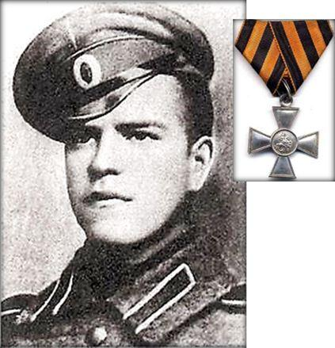
Joukov dans l’armée du Tsar Nicolas II. Il sera décoré de la croix de St Georges en 1916Pourtant, rien ne prédestinait Gueorgui Konstantinovitch Joukov, à devenir le grand maréchal, plusieurs fois héros de l’Union Soviétique. C’est ce que nous apprends notamment Jean Lopez, rédacteur en chef de Guerres et Histoire qui, avec l’historien Géorgien Lasha Otkhmezuri, a publié chez Perrin en 2013 un excellent ouvrage intitulé : « Joukov, l’homme qui a vaincu Hitler ». Joukov est né le 1er décembre 1896 à Strelkovka, petit village agricole de l'oblast de Kalouga situé à une centaine de kilomètres au sud-ouest de Moscou. Issue d’un milieu pas aussi pauvre qu’il voulait bien le faire croire, (son père est ouvrier cordonnier à Moscou et sa mère travaille dans le négoce) il n’est donc pas issus du dernier cercle de la société russe qu’étaient alors les moujiks. Il va bénéficier de l’effort d’alphabétisation entrepris par le Tsar à la fin du XIX siècle et suivra 3 années de scolarité dans l’école de son village (niveau CE2). Il se prépare ensuite à devenir cordonnier comme son père.
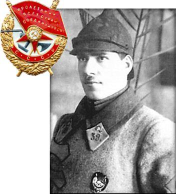
Dans la cavalerie Bolchevick en 1921, décoré de l’ordre du Drapeau RougeMais la première guerre mondiale le rattrape. Alors qu’il n’est pas volontaire, il mobilisé en 1915 dans un régiment de cavalerie en Ukraine et au terme d’une école de sous-officier il est envoyé sur le front en aout 1916 avec le grade de sergent-chef. Il ne participe pas à l’attaque principale de Galicie mais à des combats accessoires où il se distinguera en faisant prisonnier un officier Allemand. Pour cela il recevra la croix de Saint-Georges (qu’il ne portera jamais). Puis blessé d’une commotion suite à l’explosion d’un obus il est envoyé à l’arrière pour y être soigné et reçoit à nouveau la Croix de Saint-Georges). Le 3 mars 1918 les bolcheviks qui ont pris le pouvoir signent le Traité de Brest-Litovsk avec les impériaux allemands. Dans le même temps, Joukov part soigner sa blessure dans son village et pour ne pas mourir de faim. Il ne semble pas être concerné par la révolution bolchevik.
Mais à la fin de l’année 1918, il est rappelé par Trosky - en qualité d’ancien sous-officier tsariste - pour rejoindre les troupes bolcheviks dans leur lutte contre les armées blanches de 1918 à 1922. Là, il va s’illustrer dans l’une des guerres civiles les plus violentes de l’histoire soviétique, en s’adonnant à de la contre insurrection et en écrasant les rebellions paysannes anti-bolchevick. En 1921 il sera décoré du prestigieux ordre du Drapeau Rouge et sera nommé en 1923 commandant d’un régiment de cavalerie et en 1930 commandant d’une brigade.
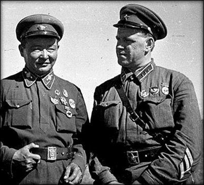
Mongolie 1939 - Le général Joukov avec Le général Horloogiyn Choybalsan, Premier ministre de la nouvelle République Populaire de Mongolie. Un fidèle stalinien.De 1930 à 1939, Joukov âgé de 34 ans, poursuit sa formation en intégrant tout d’abord la prestigieuse école supérieure de cavalerie de Leningrad, puis ensuite l’académie militaire d’Etat-Major Frounze de Moscou en 1931. Cette formation militaire lui permettra de commander les régiments de cavalerie les plus prestigieux et de prendre conscience de l’intérêt stratégique naissant de l’arme blindée.
Il est nommé observateur lors de la guerre d’Espagne de 1936 à 1939 ce qui lui évitera les purges staliniennes qui sévissent au même moment en Russie. En 1939 il prend le commandement du premier corps d'armée soviétique mongol où il obtiendra son premier fait d’arme significatif lorsqu’il remportera le 20 août la victoire de la Bataille de Halhin Gol et défait les japonais qui ont envahie la Mandchourie depuis 1932 et menaçaient la Sibérie. Il est fait général en 1940.
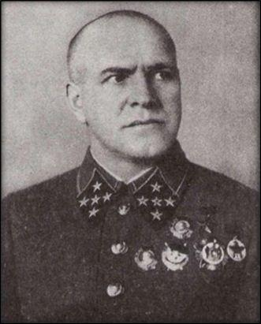
Joukov avec ses 5 étoiles de maréchal. Une originalité uniformologique (1943)Propulsé dans les plus hautes sphères militaires, il est nommé le 22 juin 1941, chef de l’état-major général de l’armée rouge. A la suite de conflit avec Staline il préfère reprendre un commandement de front dès aout 1941. Toutefois Staline le fait rentrer dans son état-major militaire personnel (Stavka) où Joukov intègre le premier cercle politico-militaire.
En aout 1942, Staline le fait Délégué du Commandement en Chef, alors même que l’armée rouge est dans une situation militaire catastrophique depuis le lancement de l’opération Barbarossa par les nazis de juin à décembre 1941. En septembre 1942, Joukov devient - sur ordre de Staline – « LE » représentant spécial de la Stavka sur tous les fronts. Il est alors l’œil et l’oreille de Staline… Après la victoire de Stalingrad, il est fait en 1943 le premier Maréchal d’URSS et vice-commandant en chef.
Joukov va alors participer à presque toutes les batailles russes contre l’Allemagne, mais va particulièrement s’illustrer – parfois seul ou parfois avec d’autres généraux russes – dans les principales batailles décisives contre la Wehrmacht, et notamment lors des conflits suivants :
Bataille de Moscou (du 2 janvier 1941 au 22 janvier 1942) contre les généraux allemands Fedor von Bock, Heinz Guderian et Albert Kesselring.
Siège de Leningrad (du 8 septembre 1941 au 27 janvier 1944) contre les généraux Wilhelm Ritter von Leeb, Georg von Küchler, le général finlandais Carl Gustaf Emil Mannerheim et le général espagnol de la division Azul Agustín Muñoz Grandes
Bataille de Stalingrad (du 17 juillet 1942 au 2 février 1943) contre les généraux allemands Friedrich Paulus, Erich von Manstein, Hermann Hoth et les armées roumaines, italiennes, hongroises et croates.
Bataille de Koursk (du 5 juillet 1943 au 23 août 1943) contre les généraux allemands Hans von Kluge, Erich von Manstein, Hermann Hoth et Walter Model
Opération Bagration (du 22 juin 1944 au 19 août 1944) contre les généraux allemands Ernst Busch (jusqu'au 28 juin) puis Walther Model et Ferdinand Schörner
Bataille de Berlin (du 16 avril 1945 au 2 mai 1945) contre Hitler et ses généraux Gotthard Heinrici, Helmut Weidling, Hellmuth Reymann et Kurt von Tippelskirch.
Toutefois, les auteurs de la biographie du maréchal Joukov, MM. Lopez et Otkhmezuri, précisent que bien qu’étant le général le plus victorieux de l’Armée Rouge, celui-ci aura eu plusieurs échecs et notamment par son incapacité à arrêter la Wehrmacht lors de l’été 1941. Il en sera de même lors de l’offensive de Rjev-Sytchiovka (opération Mars) à l’automne 1942 dans les alentours de Moscou ainsi qu’en mars 1944 lors qu’il ratera la possibilité d’encercler la première armée Panzer du Général Erich von Manstein. Enfin, son échec le plus flagrant est sans doute lors de la bataille des hauteurs de Seelow en avril 1945, qui failli tourner au fiasco malgré une supériorité numérique écrasante des soviétiques sur les allemands et qui se termina finalement par une issue heureuse au profit des troupes russes, qui purent ainsi faire sauter le dernier verrou défensif de Berlin et permettre à Joukov de recevoir, dans ses propres mains, la capitulation de l’Allemagne Nazie le 8 mai 1945 (9 mai en Russie). Joukov part alors aussitôt sur le front d’Extrême-Orient contre les japonais en aout 1945 mais le conflit se termine presque aussitôt, suite au bombardement d’Hiroshima et de Nagasaki, les 6 et 9 aout 1945 et la reddition japonaise le 2 septembre 1945.
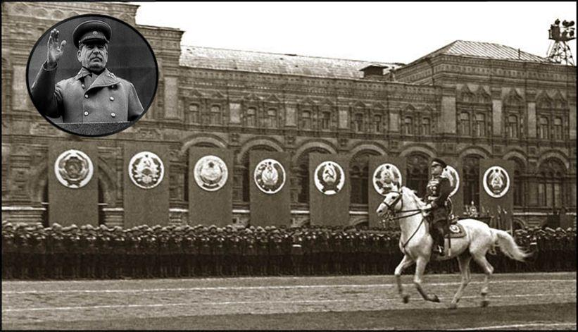
Le Maréchal Joukov à Moscou, le 24 Juin 1945, sous le regard de Staline…
A la fin de la guerre, Joukov est donc à son apogée.
Le 24 juin 1945 lors du défilé de la Victoire, sur la place Rouge à Moscou, Staline le charge de commander la parade (en réalité il ne pouvait plus monter à cheval…). A cette occasion G. Joukov aura l’honneur de passer les troupes en revue sur un superbe étalon arabe blanc
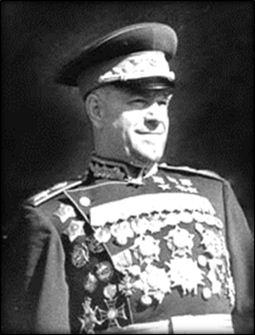
Mais après 1946, Staline, jaloux du prestige militaire du maréchal, va le faire tomber en disgrâce et l’évincer de la vie politique jusqu’en 1953 en le maintenant dans des postes éloignés (Odessa et l’Oural) et subalternes. A la mort du dictateur, le 5 mars 1953, Gueorgui Joukov revient d’exil et va jouer de nouveau un rôle politico-militaire extrêmement important pour la Russie, mais totalement méconnu des occidentaux. En effet jusqu’en 1957, soit pendant 4 ans, il est nommé ministre de la défense et va participer à la demande de Nikita Khrouchtchev, élu Premier secrétaire du Comité central du Parti communiste de l'Union soviétique en septembre 1953, à la déstalinisation de l’Union Soviétique et à l’élimination de la troïka stalinienne qui tentait de se reformer (notamment avec Lavrenti Pavlovitch Béria ancien chef du NKVD et peut-être même exécuteur de Staline…).
En 1957, Kroutchev lui fait subir une seconde disgrâce encore plus terrible que celle de Staline, et il est écarté de tout commandement ou rôle public. Il ne reparaitra en public qu’en 1964, lorsque Léonid Brejnev et Alexeï Kossyguine le feront revenir dans les rangs des plus hauts responsables soviétiques (mais sans aucun réel pouvoir). Bravant la censure brejnévienne, le vieux maréchal réussira à livrer son dernier combat, contre la censure, en publiant ses mémoires en 1970 juste avant de décéder le 18 juin 1974, âgé de 78 ans. Il est incinéré avec les honneurs militaires et repose dans un mausolée situé dans la ville éponyme de Zhuvov (oblast de Kagoula) à 120 km au sud-ouest de Moscou.
LA « FACE SOMBRE » DU GENERAL SOVIETIQUE
Joukov est le prototype même du maréchal soviétique sous la période bolchévique puis stalinienne. Une étude, sur ce personnage historique hors norme de la seconde guerre mondiale, ne peut être exhaustive sans aborder la « face sombre » de certaines périodes de sa carrière politico-militaire.
Encore aujourd’hui, de nombreux russes lui reprochent son manque de scrupule dans les excès de la révolution bolchévique, dans les purges staliniennes ainsi que des pertes humaines inconsidérées lors les batailles qu’il mènera pendant la Grande Guerre Patriotique (1941-1945).
En effet, réputé pour son exigence, voir sa dureté de commandement (il pouvait exécuter de sang-froid ceux qui ne lui étaient pas fidèlement soumis), soutien des purges staliniennes, il ne semblait ne tenir aucun compte des pertes humaines lors de ses attaques ou contre-attaques.
Alors que certains généraux allemands faisaient preuve de tactique voir de ruse, le maréchal Joukov frappait vite et fort… qu’elle qu’en soit les conséquences pour les hommes et le matériel.
Mais finalement entre une révolution bolchevick, une guerre mondiale et un régime dictatorial stalinien, pouvait-il en être autrement ?
Il n’empêche que Gueorgui Joukov sera le général qui exerça le temps le plus long, au plus haut niveau de commandement, pendant toute la seconde guerre mondiale et c’est en sauvant Moscou des Allemands, puis en encerclant l’armée de Paulus à Stalingrad, qu’il contribua directement à la fin de l’expansion nazie puis à la chute du régime hitlérien, 3 ans après.
LE HEROS DE LA GRANDE GUERRE PATRIOTIQUE
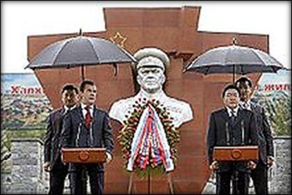
Le président de Russie Dmitry Medvedev et le président de Mongolie Tsakhiagiin Elbegdorj au monument de GeorgyMalgré la « face sombre » de certains de ses commandements ou actions politiques, le maréchal Joukov est reconnu en Russie, à juste titre, comme un véritable héros de la Grande Guerre Patriotique de 1941 à 1945 et de très nombreux monuments et portraits seront consacrés à sa gloire.
En 1995, pour la commémoration de son 100ème anniversaire, la Fédération de Russie créera même l'Ordre et la médaille de Joukov et les Chœurs de l’Armée Rouge lui consacreront également un chant.
De leurs côtés, les alliés lui seront également particulièrement reconnaissant, des victoires qu’il imposera à l’armée Nazie sur le front de l’Est, contribuant ainsi indirectement au succès du débarquement sur le front de l’Ouest, le long des côtes de Normandie, en juin 1944.
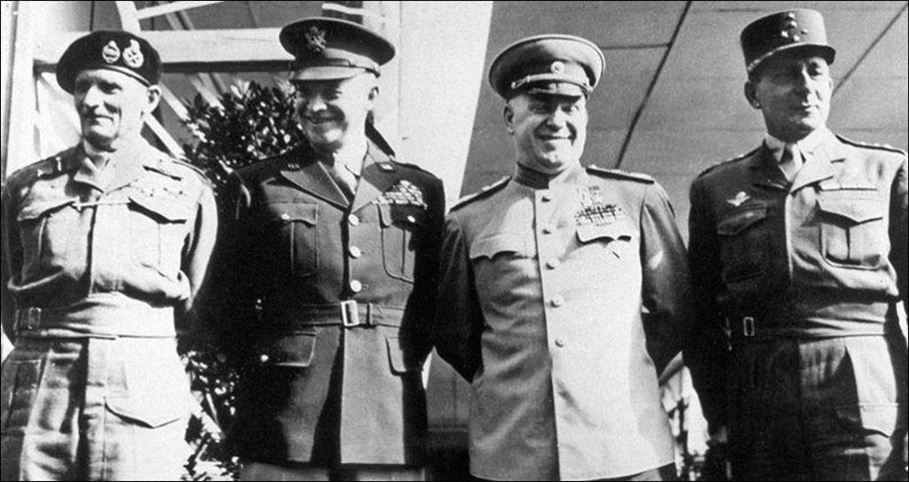
Les vainqueurs d’Hitler à Berlin le 5 Juin 1945 : Le maréchal Montgomery (GB), le général Eisenhower (USA), le maréchal Joukov (URSS) et le général (futur maréchal à titre posthume) de Lattre de Tassigny (France)
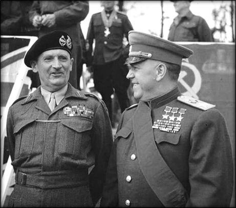
Le Maréchal Britannique Montgomery décore le Maréchal Joukov de l’Ordre du Bain (H.) à la Porte de Brandebourg Berlin (12.07.45)
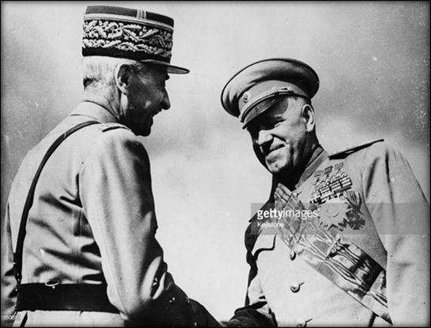
Le Général Catroux, décore G. Joukov de la Grand-Croix Le Général Catroux, décore G. Joukov de la Grand-Croix à Berlin (Allemagne), au nom de la France
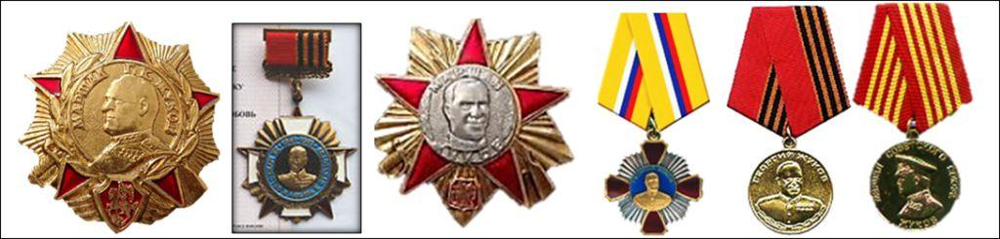
Différents types de médailles russes (officielles ou non) reprenant le thème et le portrait de Joukov (ces médailles feront l’objet d’un prochain article)
En conséquence, les autorités soviétiques et alliées rivaliseront de générosité en lui remettant leurs plus hautes distinctions honorifiques (Etoile de Maréchal et Héros de l’Union Soviétique, Ordre Virtuti Militari de Pologne, Ordre du Bain de Grande-Bretagne, Legion of Merit des Etats-Unis d’Amérique, Ordre de la Légion d’Honneur française etc…) donnant ainsi aux portraits du maréchal soviétique, une imposante poitrine bardées de plus beaux bijoux phaleristiques.

Partager cette page